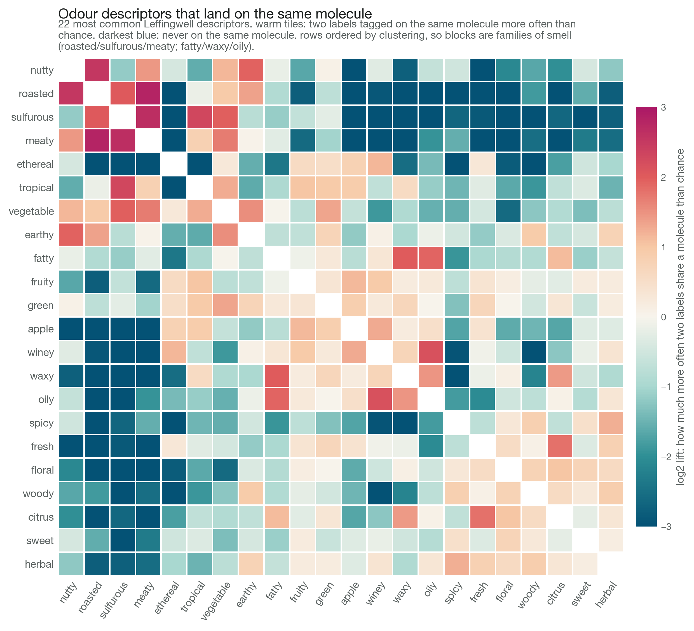
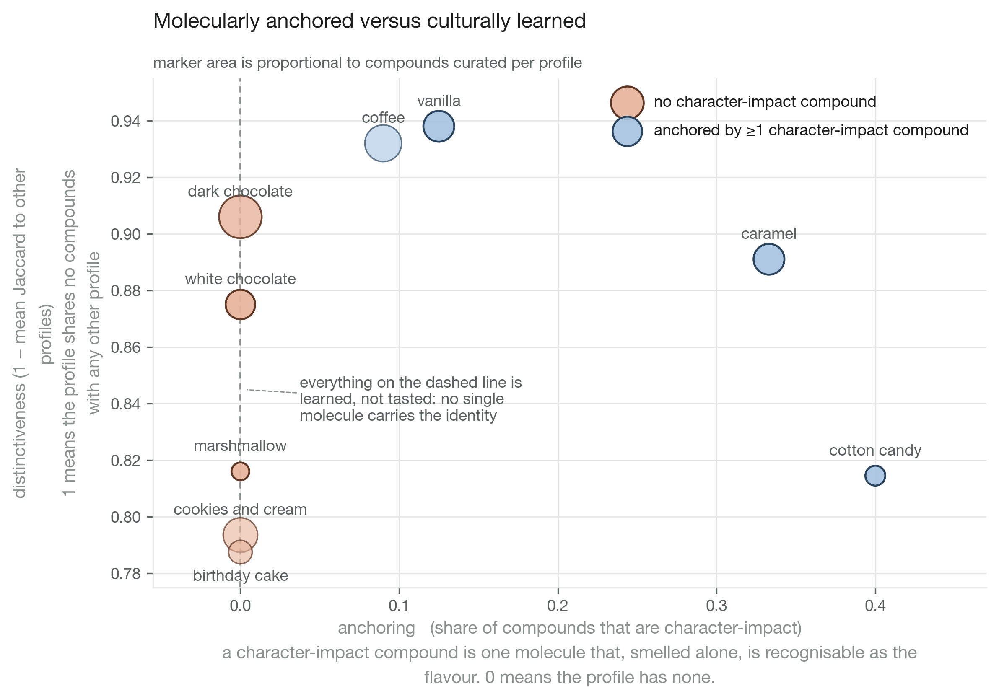

Flavour identity and sweetener potency
cheminformatics on what single molecules carry, and what structure predicts
- skills
- cheminformatics · molecular fingerprints · dimensionality reduction · baseline-controlled modelling · feature attribution
- tools
- data
- Pyrfume (Leffingwell, Goodscents) · PubChem · hand-curated sweetener and polyol tables
- status
- in progress
question
How much of a flavour is carried by single molecules, and does a sweetener's structure predict how sweet it is?



calls made
- class-mean baseline, not predict-the-mean. sugars and polyols sit at a different potency level entirely, so any feature leaking class membership scores well without learning chemistry.
- neighbour lift over raw neighbour share. raw share ranks the commonest odour words first, which measures prevalence, not structure.
- SHAP on the within-class model, not the flattering full-dataset one. descriptor axes stay readable where fingerprint bits do not.
- dairy label without coconut or cheesy. coconut notes are heavily lactonic, and baking that into the label would decide the lactone question in advance. both labels stay in the pipeline.
- polydisperse bulking agents dropped, not stood in by a representative oligomer. a stand-in files one molecule under another molecule's name.
what broke
- lactone SMARTS wrong twice. an uppercase C matched aliphatic carbon only and missed every aromatic lactone, coumarin included; with no ring carbon required on the carbonyl it also matched cyclic carbonates.
- PubChem resolved ribitol onto xylitol's CID. different pentitol, valid structure, right formula, nothing looked broken. the build now raises when two query names collapse onto one CID.
- SuperSweet, the sweetener source named in the spec, went offline mid-project. replaced by a hand-curated table resolved against PubChem, which caps what the potency analysis can say.
- the distinctiveness axis did not behave. a flavour can own a distinctive compound set with no single molecule carrying its identity, so distinctiveness and anchoring came apart.
what i tried
ranked odour words by raw neighbour share first. the commonest labels win that ranking on prevalence alone, so switched to lift over the base rate.